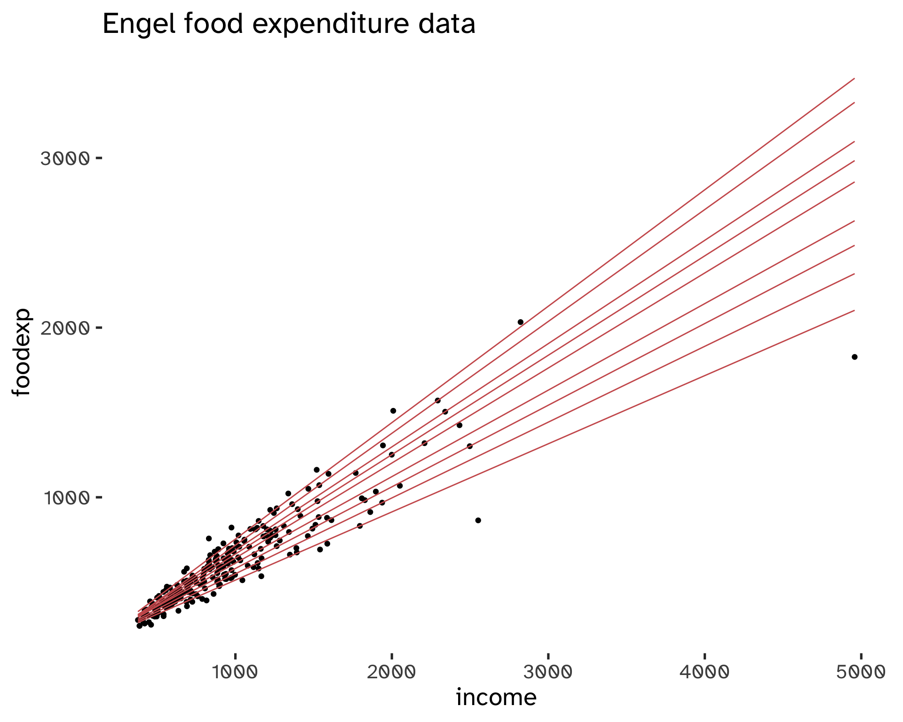
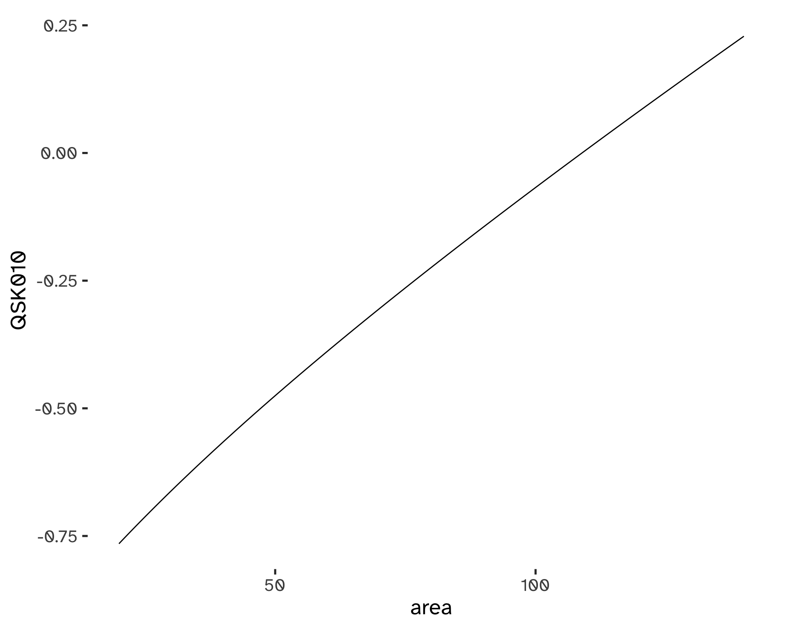
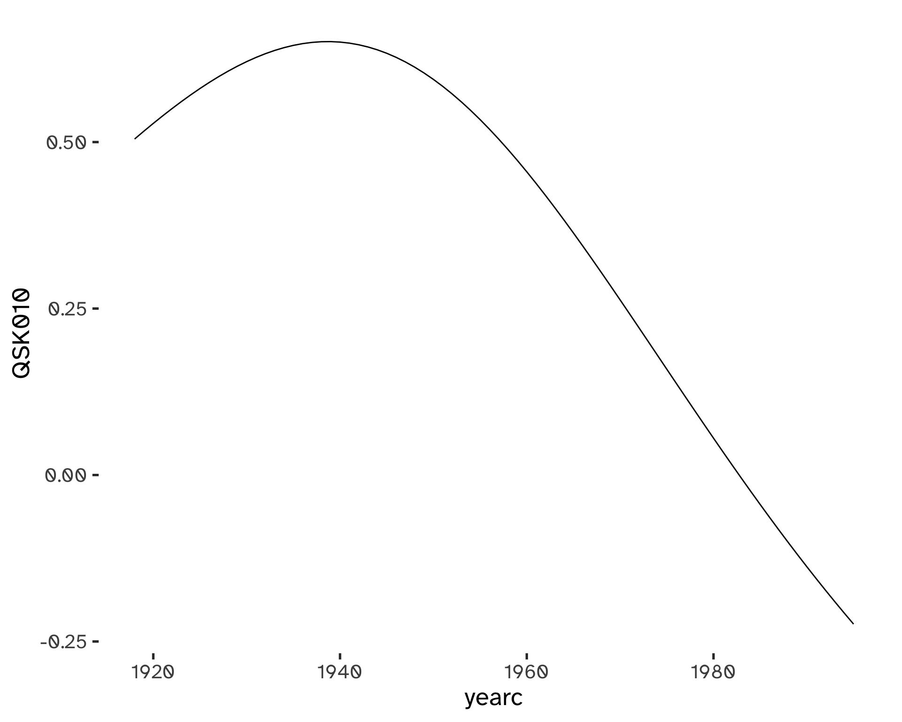

Quantile Regression

Introduction
What is Business Analytics? It is an applied discipline, tasked with gaining insight into business operations and helping to make better, fact-based decisions: a basic pillar of being data-driven. It combines Statistics, Computer Sciences, Management Science, Operational Research, and much more.
It has three main components:
- Descriptive analytics: providing insight into business questions by summarizing and visualizing observed data. Typically based on simple summaries and charts1.
- Predictive analytics: providing insight into the possible future by extrapolating patterns found in the historical data. Typically making use of statistical or machine learning predictive models (remember the Statistical Learning and Data Analytic courses).
- Prescriptive analytics: providing ways to make the best possible decisions based on the available information.
What is the role of Quantile Regression in Business Analytics?
The Ordinary-Least-Squares (OLS) based linear regression is a well-known approach when it comes to model relationships between variables, such as:
Y_i = \beta_0 + \beta_1 x_{1i} + \beta_2 x_{2i} + ... + \beta_p x_{p i + \epsilon_i} \tag{1}
There are fundamental assumptions behind this model:
- Independence of observations and error terms.
- The error terms are identically distributed.
- We have homoskedasticity and zero mean2.
- Normality of errors, as in \epsilon \stackrel{iid} {\sim} N(0, \sigma^2_{\epsilon})3.
The main focus is to estimate the mean of the distribution: all the assumptions lead to the following formula.
\mathbb{E} [Y_i \vert X = x_i] = \beta_0 + \beta_1 x_1 + ... + \beta_p x_p \tag{2}
Quantile regression allows to deal with data that cannot be described with a normal distribution and that can be summarised effectively using the mean4.
The main consequence of having homoskedastic and normal errors are:
- Symmetry.
- If the mean and scaled are known, we can assume that we know the whole distribution. Therefore, knowing how the mean changes explains all the changes in the distribution.
However, this is often not the case.
This dataset contains information from the 2001 panel of the Survey of Income and Program Participation (SIPP). The dataset contains information on several American households and on the household annual income in 2001.
Code
incomeEx <- readr::read_csv(
pathmaker(
"data/incomeSurvey.csv"
)
)Rows: 10111 Columns: 10
── Column specification ────────────────────────────────────────────────────────
Delimiter: ","
chr (4): eth, htype, ced, rural
dbl (6): age, ed, hkids, cinc, lcinc, hid
ℹ Use `spec()` to retrieve the full column specification for this data.
ℹ Specify the column types or set `show_col_types = FALSE` to quiet this message.Code
incomeEx$income <- incomeEx$cinc/1000
ggplot(
incomeEx
) +
geom_histogram(
aes(
income
),
# color = "grey50",
fill = "grey70"
) +
geom_hline(
yintercept = seq(
0,
2000,
500
),
color = "white"
) +
labs(
x = "Income",
title = "Income (100s USD)"
)`stat_bin()` using `bins = 30`. Pick better value with `binwidth`.
Many variables are not symmetric. Moreover, we are often not only interested in the mean, but in understanding extremes. Since linear regression model cannot give the full description of the distribution and everything is described by its mean, we need an alternative Framework.
We do not need to forget that linear regression is appropriate for several applications and comes with many practical and theoretical reason to explain its widespread adoption. For example, it is computationally feasible and easy to implement and can be adapted to handle heteroskedasticity and robustness. Moreover, it can be generalized to handle the non-gaussian case and even non-linearity5.
Quantiles
Quantiles are defined mathematically as:
Q(p) = \mathrm{inf} \{ x: P(X \leq x) \geq p \} \tag{3}
This is strictly related to the cumulative distribution function. The quantile of order \alpha can also be interpred as that point in the distribution for which you have a probability \alpha of observing a value less than that quantile6.
We can compute a set of quantiles to help prove the point. Note that the mean of the distribution is 47.0563867.
Code
pquant <- quantile(incomeEx %>% pull(income), c(0.1,0.25,0.5,0.75,0.9))
pquant 10% 25% 50% 75% 90%
11.64731 21.86632 39.18834 63.15703 92.93739 There is a noticeable positive difference between median and mean7, indicating a right-skewed distribution. Computing such differences helps in understanding the shape of our distribution.
Moreover, the difference between the 75th and the 50th quantile is larger than the difference between the 50th and the 25th percentile: this is an indication of an asymmetry in the distribution. The same goes when comparing the the more extreme tails (e.g. the 10th and 90th quantile):
Code
#Difference between the 75th and 50th and the 50th and 25th quartiles:
pquant[4]- pquant[3]; pquant[3] - pquant[2] 75%
23.96869 50%
17.32201 Code
#Difference between the 90th and 50th and the 50th and 10th quartiles:
pquant[5]- pquant[3]; pquant[3] - pquant[1] 90%
53.74905 50%
27.54102 Comparing the mean and the median helps in spotting skewness: a right-skewed distribution will have a positive difference between them, while a negative difference signals a left-skewed distribution. Comparing the difference between quartiles, or between deciles and quartiles, instead, indicates asymmetry: in an asymmetrical distribution, these differences will be uneven and wide.
Quantiles are not only theoretical: we can build an Empirical Cumulative Distribution Function that describes the cumulative frequencies of the observed values in our data.
For example, for an iid sample:
\hat F = \frac{\mathrm{number \ of \ observations} \leq t}{n} \tag{4}
Sample Quantiles and Sampling Distribution
If we wish to make inference we need to account for uncertainty.
The quantiles can be estimated by inverting the ECDF: this amounts to finding Q(p) for a given p and, even if the function is discrete, we can extrapolate between the jumps. However, we need to take into account the sampling distribution to make any inference about the characteristic of interest and their distribution shape in the population we are sampling from.
Asymptotic results shows that, for an identically and independently distributed (iid) sample, being f(x) the probability density function and Q(p) the quantile function:
\hat Q \stackrel{\mathrm{approx}}{\sim} N \left ( Q(p), \sqrt{\frac{(1- p)p}{n} \frac{1}{f(Q(p))^2}} \right ) \tag{5}
This function depends on the unknown: probability density function, n, and p.
Quantiles as a Minimization Problem
Quantiles can be considered as a solution to a certain minimization problem; for example, the mean is defined as:
x_{0.5} = \underset{c}{\mathrm{argmin}} \ \mathbb{E} [ \ \vert Y - c \vert \ ] \tag{6}
A more general formula is:
Q(p) = \underset{c}{\mathrm{argmin}} \ \mathbb{E} [d_p(Y, c)] \tag{7}
Where:
d_p (Y, c) = \begin{cases} \begin{aligned} (1 -p) \ \vert Y - c \vert \qquad \mathrm{for} \ Y &< c \\ p \ \vert Y - c \vert \qquad \mathrm{for} \ Y &\geq c \end{aligned} \end{cases} \tag{8}
If we are dealing with sample quantiles instead, we find Q(p) as the value that minimises:
\frac{1}{n} \sum^n_{i=1} d_p(y_i, c) = \frac{1 - p}{n} \sum_{y_i < q} \ \vert y_i - q \vert + \frac{p}{n} \sum_{y_i > q} \ \vert y_i - q \vert \tag{9}
Each point contributes to a certain value and we can represent a loss function.
Advantages of quantiles
- The mean, standard deviantion, and skewness are not robust: they are highly sensitive to outliers.
- Quantiles are equivariant to non-decreasing transformation.
A function is non decreasing if h(b) \geq h(a) if b>a8. This property implies that Q(p, h(Y)) = h(Q(p, Y))9.
Quantile-based Summary Statistics
Quantiles allow to describe the scale and shape of distributions.
Scale can be summarised with a quantile-based scale measure (QSC) at a selected p:
QSC(p) = Q(1 - p) - Q(p) \ \mathrm{for} \ p < 0.5 \tag{10}
The interquartile range (IQR) corresponds to QSC(0.25).
Skewness can be summarised with a quantile-based skewness (QSK) or asymmetry index:
QSK(p) = \frac{Q(1 - p) - Q(.5)}{Q(.5) - Q(p)} - 1\ \mathrm{for} \ p < 0.5 \tag{11}
If QSK(p) > 0, we have right-skewness.
Computing the QSK and QSC
Back at the SIPP example10, computing the QSC(.25) and the QSK(.1) will help to determine the scale and shape of the income distribution.
- QSC(.25):
Code
(pquant[4]- pquant[3])/(pquant[3] - pquant[2]) - 1 75%
0.3837128 - QSK(.1):
Code
(pquant[5]- pquant[3])/(pquant[3] - pquant[1]) - 1 90%
0.9515997 Both these values are positive: this indicates a right-skewed distribution.
Analysing Known Distributions
In this second example, we will compare two known distributions that have the same mean but different characteristics, the Gamma and the Normal, sampling values from them.
Code
df <- data.frame(
x = seq(
-100,
450
)
)
ggplot(df) +
geom_line(
aes(
x = x,
y = dnorm(
x,
47.5,
34.2
),
),
col = "limegreen"
) +
geom_line(
aes(
x = x,
y = dgamma(
x,
1.9,
rate = 0.04
),
),
col = "#004D73"
) +
labs(
title = "Gamma and Gaussian Densities",
y = expression(f[x](x))
)
The following code computes the relevant quartiles and deciles:
Code
pn <- qnorm(c(0.1,0.25,0.5,0.75,0.9), 47, 34.2)
pg <- qgamma(c(0.1,0.25,0.5,0.75,0.9), 1.9, rate = 0.04)We can immediately confirm that the Normal density is perfectly symmetric11.
Code
pn[4] - pn[3]; pn[3] - pn[2][1] 23.06755[1] 23.06755Code
pn[5] - pn[3]; pn[3] - pn[1][1] 43.82906[1] 43.82906The Gamma density is a whole other story:
Code
pg[4] - pg[3]; pg[3] - pg[2][1] 24.68976[1] 17.26947Code
pg[5] - pg[3]; pg[3] - pg[1][1] 54.03003[1] 27.45761Comparing the QSK(0.1) value for the two distributions confirms our result:
Code
(pn[5]-pn[3])/(pn[3]-pn[1]) - 1[1] -1.110223e-16Code
(pg[5]-pg[3])/(pg[3]-pg[1]) - 1 [1] 0.9677614Quantile regression
We are modeling the \tau quantile of a distribution as a function of the conditional quantile X.
The linear quantile regression model (QRM) is:
Q_{\tau} (Y \vert X) = \beta_0^{(\tau)} + \beta_1^{(\tau)} X \tag{12}
If we assume that \epsilon^{(\tau)} is a random variable such that Q_{\tau} (\epsilon^{(\tau)} \vert X) = 0 we can rewrite the previous equation as:
Y = \beta_0^{(\tau)} + \beta_1^{(\tau)} X + \epsilon^{(\tau)} \tag{13}
Choosing \tau determines the type of QRM: for \tau = 0.5, we have a median regression.
Estimation
If we have pairs of independently sampled observations (x_i, y_i), for i = 1, ..., n, the QRM leads to y_i = \beta_0^{(\tau)} + \beta_1^{(\tau)} x_i + \epsilon_i^{(\tau)}.
Based on the sampled points, we need a way to fit the function: we need an estimator for \beta^{(\tau)} = (\beta_0^{(\tau)}, \beta_1^{(\tau)}).
The median regression model estimates are such as to minimise12:
\sum^n_{i = 1} \vert y_i - a - bx_i \vert \tag{14}
More generally:
\sum^n_{i = 1} d_{\tau} (y_i, a + b x_i) \tag{15}
where:
d_{\tau} (y_i, a + b x_i) = \begin{cases} \begin{aligned} (1 - \tau) \vert y_i - a - bx_i \vert \qquad \mathrm{for} \ y_i < a + b x_i \\ \tau \vert y_i - a - bx_i \vert \qquad \mathrm{for} \ y_i \geq a + b x_i \end{aligned} \end{cases} \tag{16}
Minimisation is achieved with linear programming methods. The solution might be not unique.
Example: Engel Food Expenditure Data
We will use Engel food expenditure data used in Koenker and Bassett(1982). This is a regression dataset consisting of 235 observations on income and expenditure on food for Belgian working class households.
Code
data(engel)Plotting the dataset:
Code
ggplot(
data = engel,
aes(
x = income,
y = foodexp
)
) +
geom_point() +
labs(
title = "Engel food expenditure data"
)
We need the quantreg dataset to perform the quantile regression analysis. The function geom_quantile() can be used to compare the standard linear regression fit and the median fit:
Code
ggplot(
data = engel,
aes(
x = income,
y = foodexp
)
) +
geom_point() +
geom_smooth(
method = "lm",
aes(
col = "limegreen"
),
se = FALSE
) +
geom_quantile(
quantiles = 0.5,
aes(
col = "dodgerblue"
)
) +
labs(
title = "Engel food expenditure data - mean and median regression"
) +
scale_colour_manual(
name = 'Regression type:',
values =c(
'limegreen'='limegreen',
'dodgerblue'='dodgerblue'
),
labels = c(
'Linear Regression',
'Median Regression'
)
)`geom_smooth()` using formula = 'y ~ x'
Smoothing formula not specified. Using: y ~ x
The following plot represents a set of deciles regressions:
Code
ggplot(
data = engel,
aes(
x = income,
y = foodexp
)
) +
geom_point() +
labs(
title = "Engel food expenditure data"
) +
geom_quantile(
quantiles = seq(
.1,
.9,
by=0.1
),
col = "indianred"
)Smoothing formula not specified. Using: y ~ x
With this approach we can clearly see that expenditure on food is not the same in the different quantiles.
By default geom_quantile shows the quartile fits13.
Code
ggplot(
data = engel,
aes(
x = income,
y = foodexp
)
) +
geom_point() +
labs(
title = "Engel food expenditure data"
) +
geom_quantile(
col = "dodgerblue"
)Smoothing formula not specified. Using: y ~ x
We can estimate the QR with the quantreg package, calling the rq function14.
Code
rqfit_engel <- rq(
foodexp ~ income,
data = engel
)Code
rqfit_engel %>%
summary()
Call: rq(formula = foodexp ~ income, data = engel)
tau: [1] 0.5
Coefficients:
coefficients lower bd upper bd
(Intercept) 81.48225 53.25915 114.01156
income 0.56018 0.48702 0.60199We will also use the broom library to tidy the model output.
Code
rqfit_engel %>% tidy()tidy summarizes information about the components of a model.
Code
rqfit_engel %>% glance()glance accepts a model object and returns a tibble::tibble() with exactly one row of model summaries. The summaries are typically goodness of fit measures, p-values for hypothesis tests on residuals, or model convergence information.
Code
rqfit_engel %>% augment()Augment accepts a model object and a dataset and adds information about each observation in the dataset. Most commonly, this includes predicted values in the .fitted column, residuals in the .resid column, and standard errors for the fitted values in a .se.fit column. New columns always begin with a . prefix to avoid overwriting columns in the original dataset.
We could also want to estimate a quantile regression model for several quantiles: this can be done with a unique call using the option tau:
Code
rqmultfit_engel <- rq(
foodexp ~ income,
data = engel,
tau = c(
0.1,
0.25,
0.5,
0.75,
0.9
)
)
coef(rqmultfit_engel) tau= 0.10 tau= 0.25 tau= 0.50 tau= 0.75 tau= 0.90
(Intercept) 110.1415742 95.4835396 81.4822474 62.3965855 67.3508721
income 0.4017658 0.4741032 0.5601806 0.6440141 0.6862995Code
summary(rqmultfit_engel)
Call: rq(formula = foodexp ~ income, tau = c(0.1, 0.25, 0.5, 0.75,
0.9), data = engel)
tau: [1] 0.1
Coefficients:
coefficients lower bd upper bd
(Intercept) 110.14157 79.88753 146.18875
income 0.40177 0.34210 0.45079
Call: rq(formula = foodexp ~ income, tau = c(0.1, 0.25, 0.5, 0.75,
0.9), data = engel)
tau: [1] 0.25
Coefficients:
coefficients lower bd upper bd
(Intercept) 95.48354 73.78608 120.09847
income 0.47410 0.42033 0.49433
Call: rq(formula = foodexp ~ income, tau = c(0.1, 0.25, 0.5, 0.75,
0.9), data = engel)
tau: [1] 0.5
Coefficients:
coefficients lower bd upper bd
(Intercept) 81.48225 53.25915 114.01156
income 0.56018 0.48702 0.60199
Call: rq(formula = foodexp ~ income, tau = c(0.1, 0.25, 0.5, 0.75,
0.9), data = engel)
tau: [1] 0.75
Coefficients:
coefficients lower bd upper bd
(Intercept) 62.39659 32.74488 107.31362
income 0.64401 0.58016 0.69041
Call: rq(formula = foodexp ~ income, tau = c(0.1, 0.25, 0.5, 0.75,
0.9), data = engel)
tau: [1] 0.9
Coefficients:
coefficients lower bd upper bd
(Intercept) 67.35087 37.11802 103.17399
income 0.68630 0.64937 0.74223To plot these different models:
Code
aug1 <- rqmultfit_engel %>%
augment()
ggplot(aug1) +
geom_point(
aes(
x = income,
y = foodexp
),
col = "gray40",
data = engel
) +
geom_line(
aes(
x = income,
y =.fitted,
col = .tau
)
) +
scale_color_brewer(
type = "div",
palette = "Dark2",
aesthetics = "colour"
)We could also plot the slope estimate as a function of \tau:
Code
rqmultfit_engel %>%
tidy() %>%
filter(
term == "income"
) %>%
select(
tau,
estimate
) %>%
ggplot(
aes(
x = tau,
y = estimate
)
) +
geom_point() +
geom_line() +
labs(
title = "Slope Estimate as a Function of the Quantile"
)
Note that the usual R methods are available, such as predict (to derive predicted values) and residuals (to compute the residuals).
Code
rqmultfit_engel %>%
predict() %>%
head() [,1] [,2] [,3] [,4] [,5]
[1,] 278.9465 294.6816 316.8464 332.9841 355.7048
[2,] 327.6623 352.1686 384.7706 411.0734 438.9214
[3,] 472.1958 522.7252 586.2931 642.7547 685.8148
[4,] 366.9021 398.4735 439.4826 473.9733 505.9513
[5,] 411.8177 451.4761 502.1082 545.9711 582.6764
[6,] 490.1312 543.8898 611.3004 671.5045 716.4522Code
rqmultfit_engel %>%
residuals() %>%
head() tau= 0.10 tau= 0.25 tau= 0.50 tau= 0.75 tau= 0.90
[1,] -23.10711 -38.842205 -61.006967 -77.14463 -99.86542
[2,] -16.70359 -41.209900 -73.811889 -100.11471 -127.96278
[3,] 13.48423 -37.045167 -100.613114 -157.07472 -200.13475
[4,] 36.09523 4.523829 -36.485207 -70.97593 -102.95395
[5,] 83.74309 44.084702 -6.547383 -50.41032 -87.11564
[6,] 143.66662 89.907968 22.497401 -37.70665 -82.65437Code
rqmultfit_engel %>%
augment() %>%
ggplot() +
geom_point(
aes(
x = income,
y = .resid
)
) +
geom_hline(
yintercept = 0,
color = "grey80",
linetype = "dashed"
) +
facet_wrap(
~.tau,
nrow = 3,
ncol = 2
) +
labs(
title = "Residual Plot for Different Quantiles"
)Interpreting the Slope Difference
What are the implications of different \beta_1^{(\tau)} slopes?
If we take two models for \tau = p and \tau = q and rearrange the two equations, having the same data points (y_i, x_i), we obtain:
(\epsilon_i^{(p)} - \epsilon_i^{(q)}) = (\beta_0^{(p)} - \beta_0^{(q)}) + (\beta_1^{(p)} - \beta_1^{(q)})x_i \tag{17}
The difference between the two errors depend on x_i. If the two slopes are equal15, then the two errors differ only by a constant: hence, the quantile error distribution only differ for a constant. This means that the observations are identically distributed for different values of X.
QRM can be used to assess whether the assumption of identically distributed observations is valid.
Note that, however, to formally test the equality of slopes we need a way to make inference16: if that was the case we would be in a situation in which we have the same shape for the distribution conditional on the different values of the predictor17. In other words, we need inference because we are interested in testing:
\begin{cases} \begin{aligned} H_0: \beta_1^{(\tau_1)} = … = \beta_1^{(\tau_q)} \\ H_1: \beta_1^{(\tau_1)} \neq … \neq \beta_1^{(\tau_q)} \end{aligned} \end{cases}
To carry out this test we can use anova on a rqs object:
Code
anova(rqmultfit_engel)Quantile Regression Analysis of Deviance Table
Model: foodexp ~ income
Joint Test of Equality of Slopes: tau in { 0.1 0.25 0.5 0.75 0.9 }
Df Resid Df F value Pr(>F)
1 4 1171 11.466 3.927e-09 ***
---
Signif. codes: 0 '***' 0.001 '**' 0.01 '*' 0.05 '.' 0.1 ' ' 1We can see in this case we confidently reject the null hypothesis: the slopes are quite different and we would be inclined to consider that the conditional distribution of foodexp changes at different levels of income.
Multiple Independent variables
We can extend the model and obtain a multivariate quantle regression. In the (compact) matrix notation we have:
Q_{\tau} = (Y \vert \mathbf{X}) = \mathbf{X} \mathbf{\beta}^{(\tau)} + \epsilon_i^{\tau} \tag{18}
The coefficients \mathbf{\beta}^{(\tau)} can be interpreted as the effect of x on the quantile once the effect of other variables is also taken into account.
Again, we need a way to assess the significance of each added variable: in other words, a way to make inference18.
Example: Munich Rent data
Code
rents <- readr::read_table(
pathmaker(
"data/rent99.raw"
),
col_types = cols(
rent = col_double(),
rentsqm = col_double(),
area = col_double(),
yearc = col_double(),
location = col_factor(),
bath = col_factor(),
kitchen = col_factor(),
cheating = col_logical(),
district = col_factor()
)
)Code
rents %>%
strspc_tbl_ [3,082 × 9] (S3: spec_tbl_df/tbl_df/tbl/data.frame)
$ rent : num [1:3082] 121 437 356 283 807 ...
$ rentsqm : num [1:3082] 3.46 4.2 12.27 7.25 8.32 ...
$ area : num [1:3082] 35 104 29 39 97 62 31 61 72 75 ...
$ yearc : num [1:3082] 1939 1939 1971 1972 1985 ...
$ location: Factor w/ 3 levels "1","2","3": 1 1 2 2 1 1 1 2 1 1 ...
$ bath : Factor w/ 2 levels "0","1": 1 2 1 1 1 1 1 2 1 1 ...
$ kitchen : Factor w/ 2 levels "0","1": 1 1 1 1 1 1 1 1 1 1 ...
$ cheating: logi [1:3082] FALSE TRUE TRUE TRUE TRUE TRUE ...
$ district: Factor w/ 336 levels "1112","2114",..: 1 1 2 3 4 4 5 6 7 6 ...
- attr(*, "spec")=
.. cols(
.. rent = col_double(),
.. rentsqm = col_double(),
.. area = col_double(),
.. yearc = col_double(),
.. location = col_factor(levels = NULL, ordered = FALSE, include_na = FALSE),
.. bath = col_factor(levels = NULL, ordered = FALSE, include_na = FALSE),
.. kitchen = col_factor(levels = NULL, ordered = FALSE, include_na = FALSE),
.. cheating = col_logical(),
.. district = col_factor(levels = NULL, ordered = FALSE, include_na = FALSE)
.. )To begin, we will set area and yearc as predictors:
Code
p1 <- ggplot(
rents
) +
geom_point(
aes(
area,
rent
),
alpha = .7,
col = "grey20"
) +
labs(
title = "Rent by Area"
)
p2 <- ggplot(
rents
) +
geom_point(
aes(
yearc,
rent
),
alpha = .7,
col = "grey20"
) +
labs(
title = "Rent by Construction Year"
)
p1 / p2We will fit a multivariate quantile regression with both variables:
Code
rqfitmunich <- rq(
rent ~ area + yearc,
data = rents,
tau = c(
0.1,
.5,
.9
)
)
rqfitmunich %>%
tidy()Code
p1 <- rqfitmunich %>%
augment(
newdata = tibble(
area = seq(
0,
160
),
yearc = 1990
)
) %>%
ggplot() +
geom_point(
data = rents,
aes(
area,
rent
),
alpha = .7,
col ="grey80"
) +
geom_line(
aes(
area,
.fitted,
col =.tau
)
) +
scale_color_brewer(
type = "div",
palette = "Dark2"
) +
labs(
title = "Multivariate Quantile Regression: Rents by Area \n for different Deciles"
)
p2 <- rqfitmunich %>%
augment(
newdata = tibble(
area = 80,
yearc = seq(
1918,
1997
)
)
) %>%
ggplot() +
geom_point(
data = rents,
aes(
yearc,
rent
),
col ="grey"
) +
geom_line(
aes(
yearc,
.fitted,
col =.tau
)
) +
scale_color_brewer(
type = "div",
palette = "Dark2"
) +
labs(
title = "Multivariate Quantile Regression: Rents by Year \n for different Deciles"
)
p1 / p2We should always take a look at the residuals:
Code
rqfitmunich %>%
augment() %>%
ggplot() +
geom_point(
aes(
yearc,
.resid
)
) +
geom_hline(
yintercept = 0,
col = "grey60",
linetype = "dashed"
) +
facet_grid(
rows = vars(.tau)
)
Inference
iid case
Does the addition of a variable x_j improve the goodness of fit?
There are two approaches to conduct inference in the context of quantile regression:
- With lots of mathematics we can derive some asymptotic results for \beta^{(\tau)}.
- Another option is to use simulation based inference, such as the bootstrap.
For iid observations it can be shown that, under some weak conditions:
\sqrt{n} (\hat \beta - \beta) \stackrel{d} {\to} N( 0, \mathbf{\Sigma}) \tag{19}
\mathbf{\Sigma} is the variance-covariance matrix of form:
\mathbf{\Sigma} = \frac{\tau(1 - \tau)}{f_{\epsilon (\tau)}} (\mathbf{X}^T \mathbf{X})^{-1} \tag{20}
The term f_{\epsilon (\tau)} is the pdf of the error term \epsilon (\tau) evaluated at the \tau^{th} quantile of the error distribution, which we assumed to be 0.
Non-iid case
The form of \mathbf{\Sigma} for the non-identically distributed case is fairly complex.
In general, the mathematics is difficult and it is not always possible to derive asymptotic variances analytically. Hence, a simulation-based method such as the bootstrap is required.
The Bootstrap
Bootstrapping19 is any test or metric that uses random sampling with replacement, mimicking the sampling process, and falls under the broader class of resampling methods. Bootstrapping assigns measures of accuracy20 to sample estimates. This technique allows estimation of the sampling distribution of almost any statistic using random sampling methods.
It is based on the sample data and having enough computing power. The key idea is that we assume the population is just many copies of the sample; then, we make lots of copies of the sample and then we sample repeatedly from the population. In practice, instead of actually making many copies of the sample and sampling from that, we use a sampling technique that is equivalent, based on sampling with replacement.
In particular, we will use non parametric resampling bootstrap.
- We sample with replacement from the original sample.
- Each sample selected is called a bootstrap sample.
- For each bootstrap sample, we compute the estimate of the parameter, giving us a bootstrap estimate.
- We collect the bootstrap estimates for many bootstrap samples to create a bootstrap distribution which we use as a sampling distribution for the estimate.
Bootstrap Confidence Intervals
We can construct confidence intervals by bootstrap.
When a bootstrap distribution for an estimate is symmetric and bell-shaped, we calculate a 1 − \alpha% confidence interval using:
\left [\hat \theta - q_{1- \frac{\alpha}{2}} \times \mathrm{sd_{boot}}, \hat \theta + q_{1- \frac{\alpha}{2}} \times \mathrm{sd_{boot}} \right ] \tag{21}
where \mathrm{sd_{boot}} denotes the standard deviation of the bootstrap estimates.
When a bootstrap distribution for an estimate is not symmetric we calculate a 1 − \alpha% confidence interval using:
\left [\theta_{\mathrm{boot}} \left (\frac{\alpha}{2} \right), \theta_{\mathrm{boot}}\left (1 - \frac{\alpha}{2} \right) \right] \tag{22}
These two extremes denote the \alpha/2 and 1 - \alpha/2 empirical quantiles of the bootstrap estimates.
Bootstrap Inference
Using the standard error derived with the bootstrap samples we can build a test on \beta_j^{\tau}21, in the form
\begin{cases} \begin{aligned} H_0: B_j = 0 \\ H_1 : B_j \neq 0 \end{aligned} \end{cases} \tag{23}
Under the null hypothesis, our null statistic is:
TS_{B_j} = \frac{\hat \beta_j}{se(B_j)} \sim N(0, 1) \tag{24}
We estimate se(\beta_j) with the bootstrap or with some theoretical derivation: hence, we need to compare the test statistic against a T distribution with n − (p + 1) degrees of freedom.
Inference on single coefficient is often useful; however, we wish to test other hypothesis and also a to test set of hypothesis.
For a QR model for a single quantile \tau we can have two different nested model structures; for q \geq p:
\begin{aligned} \mathrm{Model \ 0}: \qquad Q_{\tau} (Y \vert X_1, …, X_q) = \beta_0^{\tau} + \beta_1^{\tau} X_1 + … + \beta_q^{\tau} \\ \mathrm{Model \ 1}: \qquad Q_{\tau} (Y \vert X_1, …, X_p) = \beta_0^{\tau} + \beta_1^{\tau} X_1 + … + \beta_p^{\tau} \\ \end{aligned} \tag{25}
Note that Model 1 reduces to Model 2 when \beta_{p + 1} = … = \beta_q = 0.
We are interested in constructing a test to verify the following null hypothesis22:
\begin{cases} \begin{aligned} H_0: B_{p + 1} = … = \beta_q = 0 \\ H_1: B_{p + 1} = … = \beta_q \neq 0 \end{aligned} \end{cases} \tag{26}
This null hypothesis can be tested through an ANOVA test, based on the asymptotic normality.
Another important test might involve the comparison of the slopes of \beta^{(p)}_1 and \beta^{(q)}_1, under the assumption of identically distributed data. In this case, we are comparing models for different quantiles; if we have one explanatory variable, then:
\begin{aligned} \mathrm{Model \ 1}: Q_{q} (Y \vert X) = \beta_0^{(q)} + \beta_1^{(q)} X \\ \mathrm{Model \ 2}: Q_{p} (Y \vert X) = \beta_0^{(p)} + \beta_1^{(p)} X \end{aligned} \tag{27}
We are interested in the following hypothesis:
\begin{cases} \begin{aligned} H_0: B^{(p)}_1 = B^{(q)}_1 \\ H_1: B^{(p)}_1 \neq B^{(q)}_1 \end{aligned} \end{cases} \tag{28}
Again, this test can be performed via ANOVA, based on the asymptotic normality.
we should test for more that two quantiles; formal testing gives evidence of varying slopes.
Inference & Bootstrap Examples
We will compare different models; they will polynomial variations of the same regression.
Code
rqfit2munich <- rq(
rent ~ area + yearc + I(area^2) + I(yearc^2),
data = rents,
tau = c(
0.1,
0.25,
.5,
.75,
.9
)
)
summary(
rqfit2munich,
se="boot"
)
Call: rq(formula = rent ~ area + yearc + I(area^2) + I(yearc^2), tau = c(0.1,
0.25, 0.5, 0.75, 0.9), data = rents)
tau: [1] 0.1
Coefficients:
Value Std. Error t value Pr(>|t|)
(Intercept) 85494.66597 30583.97173 2.79541 0.00522
area 2.25021 0.74650 3.01433 0.00260
yearc -90.05313 31.36541 -2.87110 0.00412
I(area^2) 0.00501 0.00582 0.86031 0.38969
I(yearc^2) 0.02372 0.00804 2.95023 0.00320
Call: rq(formula = rent ~ area + yearc + I(area^2) + I(yearc^2), tau = c(0.1,
0.25, 0.5, 0.75, 0.9), data = rents)
tau: [1] 0.25
Coefficients:
Value Std. Error t value Pr(>|t|)
(Intercept) 140289.03522 24006.30071 5.84384 0.00000
area 3.89787 0.53137 7.33558 0.00000
yearc -146.49186 24.63627 -5.94619 0.00000
I(area^2) -0.00143 0.00390 -0.36776 0.71308
I(yearc^2) 0.03825 0.00632 6.05182 0.00000
Call: rq(formula = rent ~ area + yearc + I(area^2) + I(yearc^2), tau = c(0.1,
0.25, 0.5, 0.75, 0.9), data = rents)
tau: [1] 0.5
Coefficients:
Value Std. Error t value Pr(>|t|)
(Intercept) 254129.26393 28407.09162 8.94598 0.00000
area 3.97520 0.60937 6.52341 0.00000
yearc -263.02511 29.02841 -9.06096 0.00000
I(area^2) 0.00537 0.00484 1.11107 0.26662
I(yearc^2) 0.06808 0.00742 9.17916 0.00000
Call: rq(formula = rent ~ area + yearc + I(area^2) + I(yearc^2), tau = c(0.1,
0.25, 0.5, 0.75, 0.9), data = rents)
tau: [1] 0.75
Coefficients:
Value Std. Error t value Pr(>|t|)
(Intercept) 276975.85622 30428.73626 9.10244 0.00000
area 4.77638 0.92501 5.16359 0.00000
yearc -285.38020 31.09774 -9.17688 0.00000
I(area^2) 0.01012 0.00777 1.30190 0.19305
I(yearc^2) 0.07354 0.00795 9.25428 0.00000
Call: rq(formula = rent ~ area + yearc + I(area^2) + I(yearc^2), tau = c(0.1,
0.25, 0.5, 0.75, 0.9), data = rents)
tau: [1] 0.9
Coefficients:
Value Std. Error t value Pr(>|t|)
(Intercept) 283939.08515 39887.65240 7.11847 0.00000
area 5.34324 0.80708 6.62047 0.00000
yearc -292.08831 40.80406 -7.15832 0.00000
I(area^2) 0.01746 0.00666 2.62279 0.00876
I(yearc^2) 0.07516 0.01043 7.20244 0.00000The option se = "boot" computes the standard errors using the bootstrap. To compare the fitness of available models, we can use the ANOVA test:
The se="boot" option will compute the standard error estimates using the bootstrap.
To compare the different model, we can use the ANOVA test:
Code
anova(
rq(
rent ~ area + yearc + I(area^2) + I(yearc^2),
data = rents,
tau = c(
0.1
)
),
rq(
rent ~ area + yearc + I(yearc^2),
data = rents,
tau = c(
0.1
)
)
)Quantile Regression Analysis of Deviance Table
Model 1: rent ~ area + yearc + I(area^2) + I(yearc^2)
Model 2: rent ~ area + yearc + I(yearc^2)
Df Resid Df F value Pr(>F)
1 1 3077 1.3754 0.241Code
anova(
rq(
rent ~ area + yearc +I(area^2) + I(yearc^2),
data = rents,
tau = c(
0.9
)
),
rq(
rent ~ area + yearc,
data = rents,
tau = c(
0.9
)
)
)Quantile Regression Analysis of Deviance Table
Model 1: rent ~ area + yearc + I(area^2) + I(yearc^2)
Model 2: rent ~ area + yearc
Df Resid Df F value Pr(>F)
1 2 3077 39.968 < 2.2e-16 ***
---
Signif. codes: 0 '***' 0.001 '**' 0.01 '*' 0.05 '.' 0.1 ' ' 1Feeding the anova function with different \tau for the same model will conduct a joint test for the equality of slopes:
Code
anova(rqfit2munich)Quantile Regression Analysis of Deviance Table
Model: rent ~ area + yearc + I(area^2) + I(yearc^2)
Joint Test of Equality of Slopes: tau in { 0.1 0.25 0.5 0.75 0.9 }
Df Resid Df F value Pr(>F)
1 16 15394 40.163 < 2.2e-16 ***
---
Signif. codes: 0 '***' 0.001 '**' 0.01 '*' 0.05 '.' 0.1 ' ' 1We can visualize the predicted quantiles by looking at the effect of area on rent for different fixed values of yearc. We wish to show this in a faceted plot, so we will make use of the expand_grid function from the tidyr package.
Code
rqfit2munich %>%
augment(
newdata = expand_grid(
area = seq(
20,
140
),
yearc = c(
1918,
1995
)
)
) %>%
ggplot() +
geom_line(
aes(
area,
.fitted,
group = .tau
)
) +
facet_grid(
~yearc
) +
labs(
title = "Predicted Quantiles for Area"
)
Code
rqfit2munich %>%
augment(
newdata = expand_grid(
area = c(
20,
140
),
yearc = seq(
1918,
1995
)
)
) %>%
ggplot() +
geom_line(
aes(
yearc,
.fitted,
group = .tau
)
) +
facet_grid(
~area
) +
labs(
title = "Predicted Quantiles for Construction Year"
)More Intepretation of the Quantile Regression
What are the implications of the alernative hypothesis H_1: B^{(p)}_1 \neq B^{(q)}_1?
The main implication of this null hypothesis is that the distribution changes as a function of X. We can describe the change in scale and shape using quantile-based measures; we already introduced them for the simple univariate case23, and now we will extend them and compute them as a function of \mathbf{X}.
\begin{aligned} QSC(p \vert X) &= Q(1 - p \vert X) - Q(p \vert X) = \\ &= (\beta{(1 - p)}_0 - \beta^{(1 - p)}_1 X) - (\beta{(p)}_0 - \beta^{(p)}_1 X) = \\ &= (\beta{(1 - p)}_0 - \beta^{(p)}_0) + (\beta^{(1 - p)}_1 - \beta^{(p)}_1) X \end{aligned} \tag{29}
If the scale is the same \beta^{(1 - p)}_1 = \beta^{(p)}_1; hence, QSC(p \vert X) reduces to a constant.
\begin{aligned} QSK(p \vert X) &= \frac{Q(1-p \vert X) - Q(.5 \vert X)}{Q(.5 \vert X) - Q(p \vert X)} - 1 =\\ &= \frac{\beta^{(1 - p)}_0 + \beta^{(1 - p)}_1 X - \beta^{(.5)}_0 - \beta^{(.5)}_1 X}{\beta^{(.5)}_0 - \beta^{(.5)}_1 X -\beta^{(p)}_0 + \beta^{(p)}_1 X } -1 = \\ &= \frac{ (\beta^{(1 - p)}_0 - \beta^{(.5)}_0) + (\beta^{(1 - p)}_1 - \beta^{(.5)}_1) X}{ (\beta^{(.5)}_0 - \beta^{(p)}_0) + (\beta^{(.5)}_1 - \beta^{(p)}_1) X} -1 \end{aligned} \tag{30}
Under symmetry, (\beta^{(1 - p)}_1 - \beta^{(.5)}_1) = (\beta^{(.5)}_1 - \beta^{(p)}_1) and (\beta^{(1 - p)}_0 - \beta^{(.5)}_0) = (\beta^{(.5)}_0 - \beta^{(p)}_0); this implies that QSK(p \vert X) reduces to 0.
Example: Changes in the Distribution Properties
Once we have the predicted values for different quantiles we can also plot some measure of scale and shape as a function of some explanatory variable to assess whether this is changing: we compute QSC(0.25) and QSK(0.9) for fixed values of
yearcand allowingareato vary:
Code
qs <- rqfit2munich %>%
augment(
newdata = expand_grid(
area = seq(
20,
140
),
yearc = c(
1995
)
)
) %>%
pivot_wider(
names_from =.tau,
values_from = .fitted
) %>%
mutate(
QSC025 = `0.75` - `0.25`,
QSK010 = (`0.9` - `0.5`)/(`0.5` - `0.1`) - 1
)Code
ggplot(qs) +
geom_line(
aes(
area,
QSC025
)
)
Code
ggplot(qs) +
geom_line(
aes(
area,
QSK010
)
)
We will do now the same keeping a fixed value for area and allowing yearc to vary.
Code
qs <- rqfit2munich %>%
augment(
newdata = expand_grid(
area = c(80),
yearc = seq(
1918,
1995
)
)
) %>%
pivot_wider(
names_from =.tau,
values_from = .fitted
) %>%
mutate(
QSC025 = `0.75` - `0.25`,
QSK010 = (`0.9` - `0.5`)/(`0.5` - `0.1`) - 1
)Code
ggplot(qs) +
geom_line(
aes(
yearc,
QSC025
)
)
Code
ggplot(qs) +
geom_line(
aes(
yearc,
QSK010
)
)
Footnotes
Any predictive or prescriptive model is based on some steps of descriptive analytics.↩︎
This last one, however, is not strictly necessary.↩︎
This assumption allows for inference on the model parameters.↩︎
Warning: the mean is not a robust indicator of position.↩︎
Generalized Linear Models.↩︎
In other words, it determines a specific point in the distribution. For example, the median is the quantile of order 0.5: you have a 50% probability of observing a value lower than the median.↩︎
The mean of this distribution is 47.0563867.↩︎
The basic example is a linear transformation, but this property also applies to logarithms.↩︎
For example, Q(p, a + bY) = a + bQ(p, Y).↩︎
Well, no surprises here.↩︎
This is the same loss function used to find the median.s↩︎
\tau = c(0.25, 0.5, 0.75).↩︎
It works similarly to the well-known
lmfunction.↩︎(\beta_1^{(p)} - \beta_1^{(q)}) = 0.↩︎
For example, an indication of conditionally identically distributed response variable.↩︎
See Section 3.5.↩︎
First introduced by Bradley Efron in the late 70s.↩︎
bias, variance, confidence intervals, prediction error, etc.↩︎
In the following notation the \tau is omitted for readability.↩︎
This test amounts to asking the question: “Are the added variables significant in explaining the behaviour of our dependent variable?”↩︎